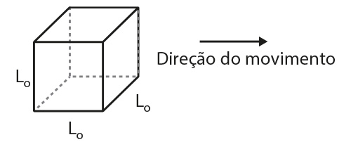
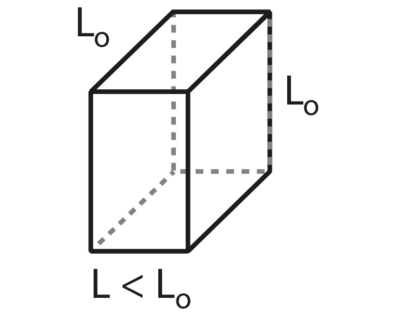
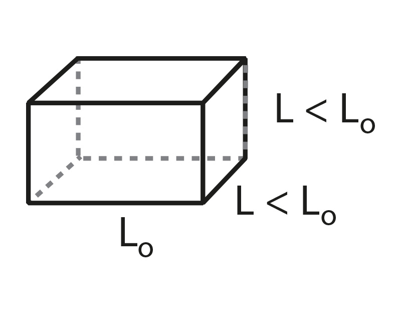
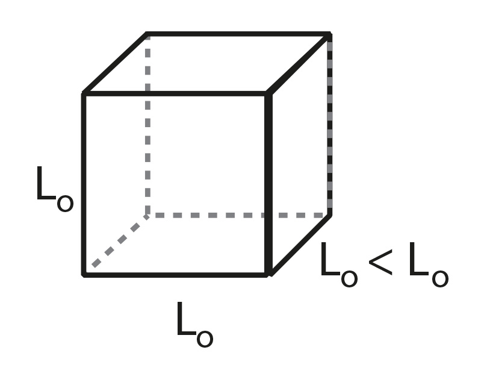
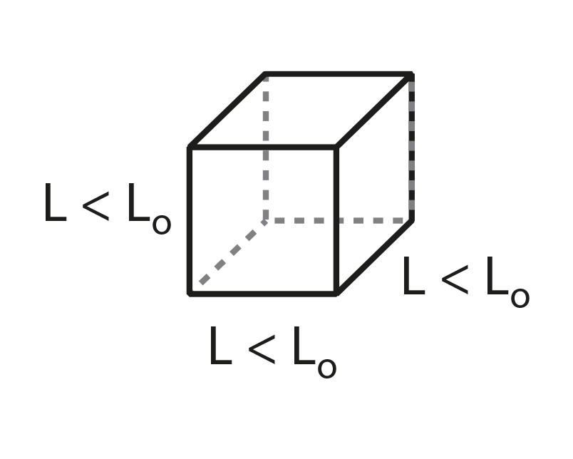
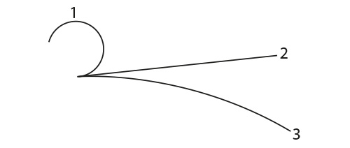

A vida-média de múons freados num bloco de chumbo, que está fixo num laboratório, é de 2,2 μs. A vida-média dos múons com grande velocidade, numa explosão de raios cósmicos, observada da Terra, é 16
μs. Ache a velocidade dos múons dos raios cósmicos em relação à Terra.
Os píons são criados na alta atmosfera da Terra quando partículas de alta energia de raios cósmicos colidem com núcleos atômicos. Um píon, assim que formado, desce em direção à Terra com a velocidade de 0,99 c. Em um referencial em
que estejam em repouso, os píons decaem com a vida-média de 26 ns. Em um referencial fixo na Terra, qual é a distância percorrida (em média) pelos píons na atmosfera antes de decaírem?
(UFRN) Bastante envolvida com seus estudos para a prova do vestibular, Sílvia selecionou o seguinte texto sobre Teoria da Relatividade para mostrar à sua colega Tereza:
À luz da Teoria da Relatividade Especial, as medidas de comprimento, massa e tempo não são absolutas quando realizadas por observadores em referenciais inerciais diferentes. Conceitos inovadores como massa relativística, contração
de Lorentz e dilatação temporal desafiam o senso comum. Um resultado dessa teoria é que as dimensões de um objeto são máximas quando medidas em repouso em relação ao observador. Quando o objeto se move com velocidade V, em relação
ao observador, o resultado da medida de sua dimensão paralela à direção do movimento é menor do que o valor obtido quando em repouso. As suas dimensões perpendiculares à direção do movimento, no entanto, não são afetadas.
Depois de ler esse texto para Tereza, Sílvia pegou um cubo de lado L0 que estava sobre a mesa e fez a seguinte questão para ela:
Como seria a forma desse cubo se ele estivesse se movendo, com velocidade relativística constante, conforme direção indicada na figura abaixo?

A resposta correta de Tereza a essa pergunta foi:
a)

b)

c)

d)

(UFRN) Nos dias atuais, há um sistema de navegação de alta precisão que depende de satélites artificiais em órbita em torno da Terra. Para que não haja erros significativos nas posições fornecidas por esses satélites, é necessário
corrigir relativisticamente o intervalo de tempo medido pelo relógio a bordo de cada um desses satélites. A Teoria da Relatividade Especial prevê que, se não for feito esse tipo de correção, um relógio a bordo não marcará o mesmo
intervalo de tempo que outro relógio em repouso na superfície da Terra, mesmo sabendo-se que ambos os relógios estão sempre em perfeitas condições de funcionamento e foram sincronizados antes de o satélite ser lançado.
Se não for feita a correção relativística para o tempo medido pelo relógio de bordo:
a) ele se adiantará em relação ao relógio em terra enquanto ele for acelerado em relação à Terra;
b) ele ficará cada vez mais adiantado em relação ao relógio em terra;
c) ele se atrasará em relação ao relógio em terra durante metade de sua órbita e se adiantará durante a outra metade da órbita;
d) ele ficará cada vez mais atrasado em relação ao relógio em terra.
(UNISC) Em uma explosão de uma mina de carvão foram utilizadas 1 000 toneladas de explosivo trinitrotolueno (TNT), o que equivale a 1,0 ⋅ 1012 calorias. Qual foi, aproximadamente, a quantidade de massa convertida em
energia equivalente a essa explosão? (1 caloria = 4,18 J e c = 3 ⋅ 108 m/s)
a) 4,6 ⋅ 10–5 kg
b) 4,6 ⋅ 10–8 kg
c) 1,1 ⋅ 10–5 kg
d) 1,1 ⋅ 10–8 kg
e) 1,1 ⋅ 10–13 kg
(UPF – RS) Analise as afirmações sobre os tópicos de Física Moderna.
Um dos postulados da teoria da relatividade especial é a de que as leis da Física são idênticas em relação a qualquer referencial inercial.
Um segundo postulado da teoria da relatividade especial é o de que a velocidade da luz no vácuo é uma constante universal que não depende do movimento da fonte.
Denomina-se de efeito fotoelétrico a emissão de fótons por um material metálico quando exposto a radiação eletromagnética.
A Física Moderna destaca que em algumas situações a luz se comporta como onda e em outras situações como partícula.
Está correto apenas o que se afirma em:
a) I e II.
b) II e III.
c) I, II e III.
d) II e IV.
e) I, II e IV.
(UPE) Considere as afirmações a seguir com relação ao efeito fotoelétrico.
A energia cinética do elétron emitido pelo material depende da intensidade da radiação incidente.
Somente ocorre quanto há incidência de elétrons sobre uma superfície metálica.
A quantidade de elétrons emitidos pelo material depende da intensidade da luz incidente.
A menor energia cinética do elétron emitido pelo material é igual a zero.
Estão CORRETAS apenas:
a) I, II e IV.
b) II e III.
c) III e IV.
d) I e III.
e) II e IV.
(UEL – PR) O efeito fotoelétrico forneceu evidências experimentais para algumas das hipóteses que fundamentam a Mecânica Quântica: as energias dos estados físicos de um sistema fechado não assumem qualquer valor, mas valores
discretos; além disso, a radiação eletromagnética, que possui um comportamento dual, ora comportando-se como onda ora como partícula (fótons), tem energia (E) proporcional à frequência (v), E = h ∙ f, em que h = 6,626 ∙
10–34 joule x segundo, conhecida como Constante de Planck. Suponha que, na média, cada fóton liberado pela chama de um fogão tenha uma frequência f = 6,79 ∙ 1014 Hz. Assinale a alternativa que melhor expressa o
número de fótons absorvidos por um litro de água quando passa de 14,55 °C para 15,50 °C. (cágua = 4,18 J/g ∙ ºC)
a) 102 fótons
b) 105 fótons
c) 1012 fótons
d) 1016 fótons
e) 1022 fótons
(UERJ) A partícula káon, eletricamente neutra, é constituída por duas partículas eletricamente carregadas: um quark d e um antiquark $$\bar{s}$$.
A carga do quark d é igual a $$- \frac{1}{3}$$ do módulo da carga do elétron, e a carga do quark s tem mesmo módulo e sinal contrário ao da carga de um antiquark $$\bar{s}$$.
Ao quark s é atribuída uma propriedade denominada estranheza, a qual pode ser calculada pela seguinte fórmula:
$$S = 2 ⋅ Q −\frac{1}{3}$$
S – estranheza
Q – razão entre a carga do quark s e o módulo da carga do elétron
Assim, o valor da estranheza de quark s é igual a:
a) $$\frac{1}{3}$$
b) 1
b) $$−\frac{1}{3}$$
b) −1
(UEL – PR) O LHC (Large Hadron Collider), maior acelerador de partículas do mundo, foi inaugurado em setembro de 2008, após 20 anos de intenso trabalho. Sua função é acelerar feixes de partículas, de tal forma que estes
atinjam uma velocidade estimada em cerca de 99,99% da velocidade da luz. A colisão entre prótons será tão violenta que a expectativa é de se obterem condições próximas àquelas que existiram logo após o Big Bang.
A primeira missão desse novo acelerador é estudar partículas indivisíveis (elementares) e as forças (interações) que agem sobre elas. Quanto às forças, há quatro delas no universo: i) a ______, responsável por manter o núcleo
atômico coeso; ii) a ______, que age quando uma partícula se transforma em outra; iii) a ______, que atua quando cargas elétricas estão envolvidas. A quarta força é iv) a______ (a primeira conhecida pelo ser humano).
(Adaptado: BEDIAGA, I. LHC: o colosso criador e esmagador de matéria. Ciência Hoje. n. 247, v. 42. abr. 2008. p. 40.)
No texto, foram omitidas as expressões correspondentes às nomenclaturas das quatro forças fundamentais da natureza, em acordo com a teoria mais aceita no meio científico hoje.
Assinale a alternativa que apresenta, correta e respectivamente, os nomes dessas forças.
(UERJ) Considere as seguintes informações do Modelo Padrão da Física de Partículas:
– prótons e nêutrons são constituídos por três quarks dos tipos u e d;
– um quark u tem carga elétrica positiva igual a $$\frac{2}{3}$$ do módulo da carga do elétron;
– um próton p é constituído por dois quarks u e um quark d, ou seja, p = uud.
Determine o número de quarks e o número de quaks d que constituem um nêutron n.
(UFRN) A figura abaixo foi obtida a partir de uma fotografia de uma câmara de bolhas (aparato que permite obter o rastro do movimento de uma partícula que a atravessa) e mostra os rastros de três partículas: um próton, um elétron e
um neutrino (que é eletricamente neutro). Os rastros dessas partículas estão indicados, não necessariamente nessa ordem, pelos números 1, 2 e 3.
Há um campo magnético uniforme que permeia toda a região mostrada e que é perpendicular ao plano da figura. Considere que o movimento das partículas representadas ocorra no plano da figura e que o módulo da velocidade seja o mesmo
para todas as partículas carregadas. A força magnética é a única força que é dinamicamente relevante na situação descrita.
Dado que a força centrípeta que atua sobre as partículas carregadas é a força magnética, tem-se, então: m ∙ v2/r = q ∙ v ∙ B ∙ sen θ, em que m representa a massa da partícula; v, o módulo de sua
velocidade; r, seu raio de giro; q, o valor absoluto de sua carga elétrica; B, a intensidade do campo magnético que atua sobre ela; θ, o menor ângulo entre as direções da velocidade e do campo magnético. Essa
relação possibilita obter-se uma expressão para o raio de giro da partícula.

Com base nas informações fornecidas, na expressão obtida par o raio de giro da partícula e nos seus conhecimentos sobre a força magnética,
a) associe cada um dos rastros à partícula que o produz. Justifique.
b) indique se o campo magnético está entrando no plano da figura.